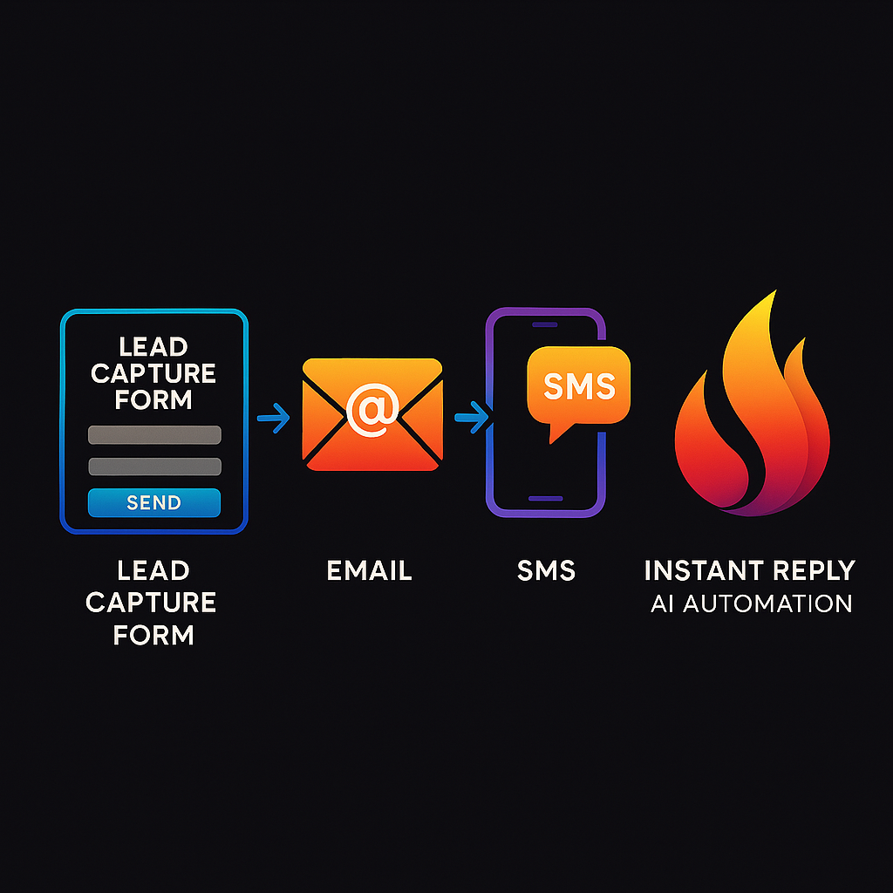

Revive Your Revenue with AI
Supercharge your sales growth — revFlare works alongside your team to help you thrive.
Join Beta AccessSupercharge your sales growth — revFlare works alongside your team to help you thrive.
Join Beta AccessrevFlare instantly replies to new leads via email-forwarding. Real human tone, no awkward botspeak.

Your lead form → Email forwarding → AI instantly responds via SMS using your Twilio number.
Old leads aren’t dead. revFlare's smart system uses SPIN + Sandler methods to bring them back to life via SMS.
Use your own Twilio. Your number. Your brand. No centralized limits.
Limited spots available for real businesses ready to convert more leads. Apply below:
If selected, you'll receive onboarding instructions within 48 hours. We'll walk you through how revFlare works and help you get your Twilio connected. Zero tech headaches.